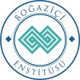
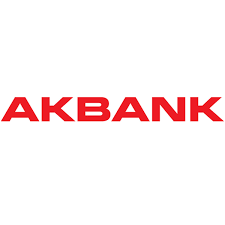
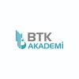
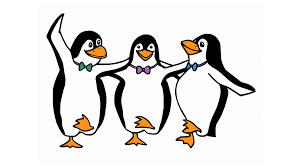
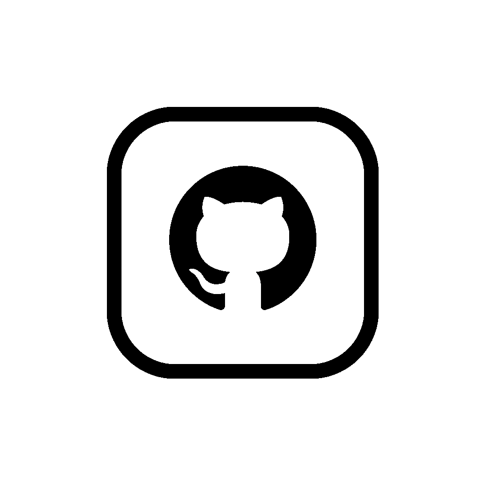

Merhaba, Mimar Sinan Güzel Sanatlar Üniversitesi İstatistik bölümü mezunuyum, Üniversite hayatımda R Studio, SPSS, C# ve JAVA gibi programları kısmi olarak öğrenme şansım oldu; veri analizi, veri görselleştirme gibi alanlarda kullanmaya çalıştım. 2019 yılında mezun oldum, İstanbul yeni havalimanında Unifree Duty Free firmasında Stok kontrol çalışanı olarak iş hayatına giriş yaptım SAP ve Microsoft Office programları kullanarak raporlar oluşturup, sunumlarını yaptım. 2021 yılında kendimi geliştirmek ve alanıma yakınlaşmak adına Bimtaş şirketinde İstatistikçi olarak çalışmaya başladım. ArcMap, ArcGIS Survey123, SPSS ve Microsoft Office programları ile anket hazırlama, veri temizliği, veri analizi ve raporlanması gibi iş kalemlerinde görev aldım. Bu süreç içerisinde Beykent Üniversitesinde Bilgisayar Mühendisliğine yüksek lisans yapamaya başladım, yazılım alanında Udemy,BTK Akademi, Boğaziçi Enstitüsü, Patika gibi yardımcı sitelerden konu ile ilgili çalışmalar yapmaya çalıştım, kendime yeni bilgiler katabileceğim ve bunları deneyimleyerek tecrübe kazanacağım fırsatlara açığım.
01/2021 - ...
Ulaşım Planlama şefliğinde aldığım İstatistikçi görevi ile Hane Halkı anketlerinin tasarlanması, yapılacak çalışmaların saha içi kontrolleri ve düzenin sağlanması, verinin kontrolü, temizlenmesi, analizi ve raporlanması. Online anketlerin oluşturulması, analizi ve raporlanması, yapılan projeye göre nüfus, araç vb. gibi verilerin geleceğe yönelik projeksiyonlanması ve raporlanması gibi görevlerde yer almaktayım.
10/2019 - 01/2021
Duty Free mağaza ve depolarında yapılan sayımların kontrolü, ürün takibi ile kayıp veya çalıntı ürünlerin tespiti, aylık olarak raporlanması, çalışan performansı raporlarının aylık olarak yöneticilere sunulması, yapılan satışlarda çıkan yanlış barkod okumalarının tespiti ve düzeltilmesi gibi görevlerde yer aldım.
02/2022 - ...
Alınan dersler ile merak duyduğum konuları geliştirme fırsatı yakaladığım ve verilen projeleri tamamlayarak, sunumlarını yaparak pekiştirdiğim yüksek lisans projelerime buradan ulaşabilirsiniz. 02/2023 ile ders dönemimin bittiği ve tez dönemimin başladığını belirtmek isterim.
10/2020 - ...
09/2013 - 07/2019
| Uçtan Uca Veri Bilimi, Knime İle Udemy Ocak/2023 Yeterlilik Belgesini Göster |
 | Temel Programlama Eğitimi Boğaziçi Enstitüsü Kasım/2022 Yeterlilik Belgesini Göster |
Veri Tabanı Yönetim Sistemleri (MSSQL) Eğitimi Boğaziçi Enstitüsü Kasım/2022 Yeterlilik Belgesini Göster |
||
|  | Yapay Zeka 101 Akbank Gençlik Akademi Ekim/2022 Yeterlilik Belgesini Göster |
 | CSS Temelleri BTK Akademi Ağustos/2022 Yeterlilik Belgesini Göster |
HTML5 İle Web Geliştirme Boğaziçi Enstitüsü Kasım/2022 Yeterlilik Belgesini Göster |
|
|  | Mongo DB Mustafa Akgül Özgür Yazılım Kampı Şubat/2019 MSGSÜ ile ilişkili |
R İle Veri Analizi Ve Görselleştirmesi Mustafa Akgül Özgür Yazılım Kampı Ağustos/2019 MSGSÜ ile ilişkili |
| Başlangıç Düzeyinde | Orta Düzeyde | İyi Düzeyde |
|---|---|---|
| JAVA, SQL, C# SAS, SAP |
SPSS, VBA R Studio, Knime |
Microsoft Office ArcGIS Survey123 |
| İlgi Alanları |
|---|
| Takım Ve Bireysel Sporlar |
| Doğa Yürüyüşleri |
| Müzik - Elektro Gitar |
| Kamp - Doğa Yürüyüşleri |
| Referanslar |
|---|
| Melike Önyılmaz Tel:0532 336 76 63 Bimtaş - Ulaşım Planlama Şefi |
| Murat Gökçe Tel:0530 976 90 01 Unifree Duty Free - Stok Kontrol Müdürü |
| Kişisel Bilgiler | |
|---|---|
| Doğum Tarihi | 29/05/1994 |
| Medeni Durum | Bekar |
| Ehliyet | B Sınıfı |
| Askerlik Durumu | Tecilli (06/2025) |
| İletişim | |
|---|---|
| 0541 641 41 71 | |
| barisskarakuss@gmail.com | |
| LinkedIn Hesabım | |
|  | GitHub Hesabım |
| 19 mayıs mahallesi, şükrü gülesin sokak no:7 Şişli/İstanbul | |